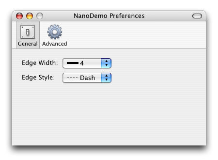

|
Adding PreferencesNano provides a standard toolbar-based preferences window, NPreferencesWindow, capable of displaying multiple panels of content.

NPreferencesWindow handles all panel loading and transitions, allowing sub-classes to simply identify the nib resource for each panel and to handle commands. The mechanism used to implement a toolbar-based preference window is described below. Projects created from the Xcode template will contain an initial implementation, that you can adjust or replace as necessary. Displaying PreferencesIn response to a kHICommandPreferences event, NApplication will invoke its CommandPreferences method. To display a preferences window, your NApplication sub-class should override this method and select your window. Since preference windows are typically singleton windows, this can be done with:
CWindowPreferences::GetInstance()->GetWindow()->Select();
This will create the preferences window instance if necessary, get its window, and ask the window
to select (and show) itself.
NWindowPreferencesNano provides a default preferences window, NWindowPreferences, which your application should sub-class to display its preferences. This window is a sub-class of NWindowPanels, and as such contains a series of panels that can be transitioned between. During your window's InitializeSelf, you should define a PanelInfoList that contains your panels, and assign the panel list and .nib file to the window. Panel InfoA PanelInfoList is a list of PanelInfo structures, each of which contains a view, icon, and string for the panel. Since Interface Builder does not support stand-alone views, the named window within the .nib file is used as a container to hold the panel contents. When a panel is selected, this window is loaded and its contents copied into the preferences window (replacing any existing controls). NWindowPanels will re-evaluate NIB_VIEW declarations whenever the current panel is changed, allowing you to declare connections to all of your controls and simply test for NULL prior to use. The icon and string values are used to populate the window toolbar. As with any Nano toolbar, the icon can specify an image within the application bundle, an Icons.h constant, or a bundle identifier. Handling EventsAs with any window, your preferences window should listen to any controls from which it wishes to receive messages. It should then implement DoMessage or DoEventCommandProcess as required, and update your preferences in response to user actions. Handling PreferencesSince preference windows reflect the preferences, they should also update the user interface when a preference is changed. This can be done by overriding DoPrefChanged, which will be invoked to initialize the user interface when a panel changes or as a result of a specific preference change. Handling Panel ChangesAlthough most preference windows can sync their state through DoPrefChanged, windows that require additional synchronization can also detect when a panel is changing or has changed. This can be done by overriding DoPanelChanging or DoPanelChanged, and calling through to the base class to ensure that the default behaviour is still obtained. |
| Copyright © 2006-2007 refNum Software | |